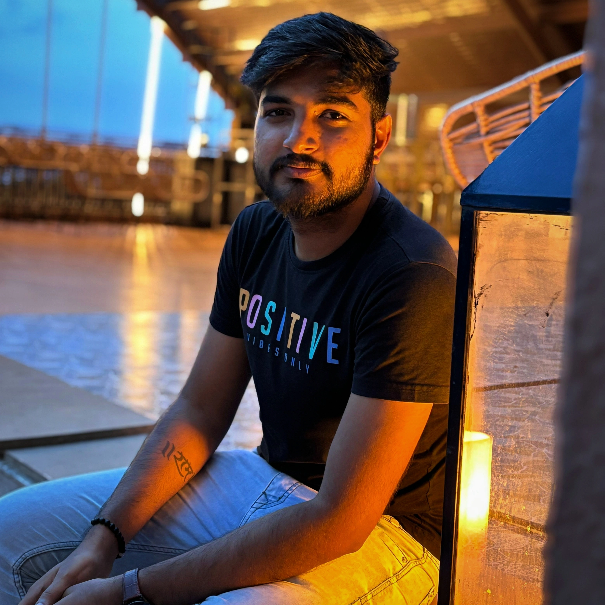
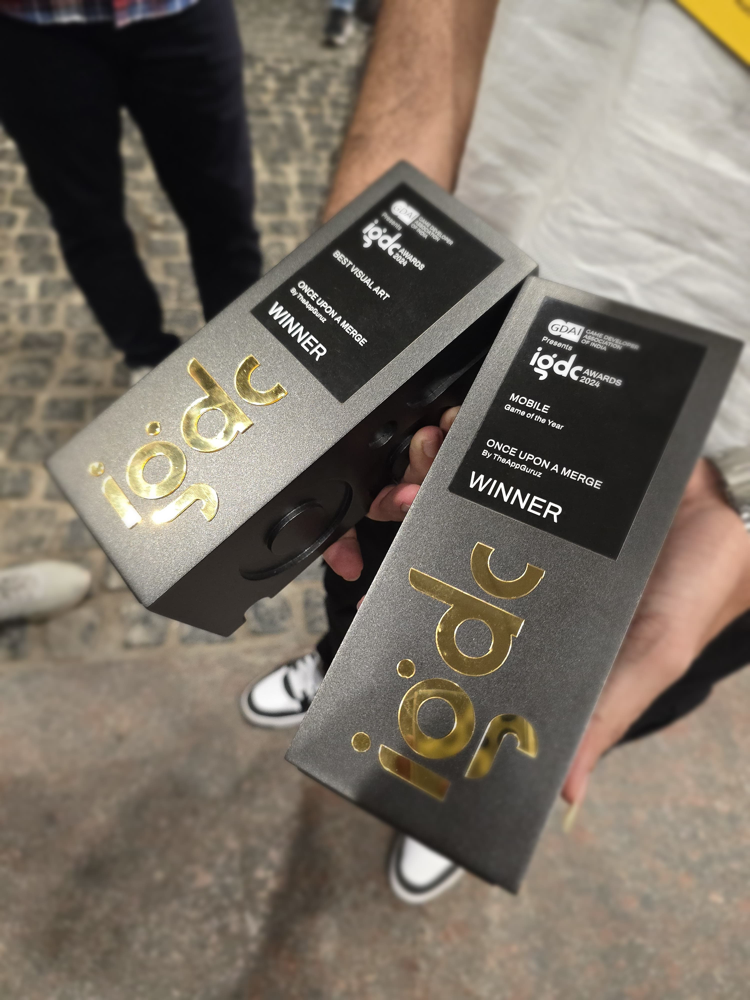

VFX & shaders
Particles, character attacks and optimized visual feedback for mobile games.
● LEAD TECHNICAL ARTIST / UNITY
5+ years bringing casual mobile games to life.
Unity UI, animation, VFX, shaders and tools.
01 / THE PORTFOLIO
Published games.
The craft behind the gameplay.
Explore each game for my contributions and available video showcases.
02 / CREATIVE EXPLORATIONS
Particles, character attacks and optimized visual feedback for mobile games.
Responsive Unity UI, scripted and tween-based animation, game areas and meta progression.
C# production tools, art integration, asset optimization and AI-assisted workflows.
03 / BEYOND THE TOOLS
I'm Bansal Vaishnav, a Lead Technical Artist with 5+ years of experience bringing casual and semi-casual mobile games to life. At TheAppGuruz in Rajkot, I connect visual design with Unity implementation through responsive UI, animation, VFX, shaders and production tools.
I enjoy the space where creativity meets problem-solving: making an interaction feel rewarding, giving a game area a sense of life, or turning repetitive production work into a simpler workflow.
I bring an artist's attention to visual detail and a technical approach to implementation. My work spans merge, cooking and tower-defense games, so I understand how animation, feedback and performance come together in different gameplay experiences. I focus on practical solutions that help teams turn creative ideas into polished mobile experiences.
A shared achievement: I contributed to Once Upon a Merge, winner of Mobile Game of the Year and Best Visual Art at the IGDC Awards 2024. These awards recognize the game and the work of the whole team.
Let's talk about your next project ↗

04 / START A CONVERSATION